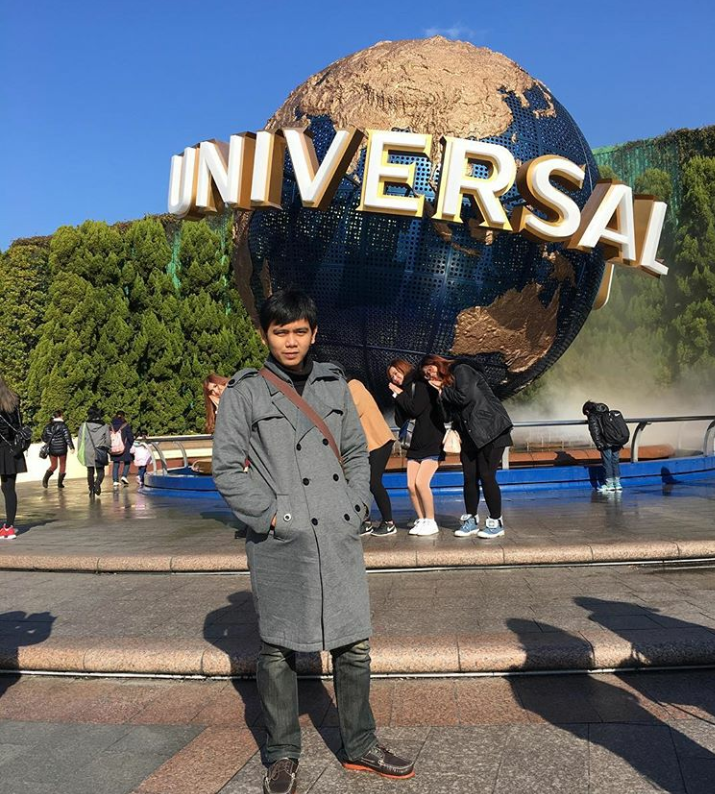

この写真は専門学校コンピュータ教育学院天神校のビルです。 2017年にここで通いました。先生たちがやさしくて、教え方もわかりやすいです。 2年間お世話になって、どうもありがとうございました。
専門学校コンピュータ教育学院

この写真はＢ2ＰＭクラスの写真です。 みんな2年間一緒にもう頑張って、ありがとうございました。 将来のため、どこでいっても頑張りましょう。
B2PMクラスの写真

この写真は2017年12月に大阪の旅行をしました。 インドネシアの友達のアパートで泊まりました。 道頓堀で散歩したり、ユニバーサルスタジオを遊んだりしました。 そして、大阪城も見に行きました。
大阪のユニバーサルスタジオ

この写真はまた2017年12月に京都を旅行しました。大阪の旅行をしてから、すぐ京都へ行きました。 いろいろな観光地行きました。伏見稲荷大社とか、金閣寺とか、清水寺などを見に行きました。 インドネシアの友達と旅行をしました。とても楽しかったです。
京都の旅行